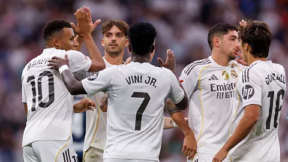

EL Real Madrid vence al Alavés y se acerca al liderato
Mbappé y Rodrygo marcaron en la victoria 2-1 en Mendizorroza
Publicado: 14/12/2025

El Real Madrid consiguió tres puntos vitales frente al Deportivo Alavés en la jornada 16 de LaLiga EA Sports. Kylian Mbappé abrió el marcador en el primer tiempo, pero Carlos Vicente empató para los locales en el minuto 68. Finalmente, Rodrygo anotó el gol decisivo en el 76’, asegurando la victoria blanca. Con este resultado, el equipo de Xabi Alonso se coloca a solo cuatro puntos del FC Barcelona en la tabla.